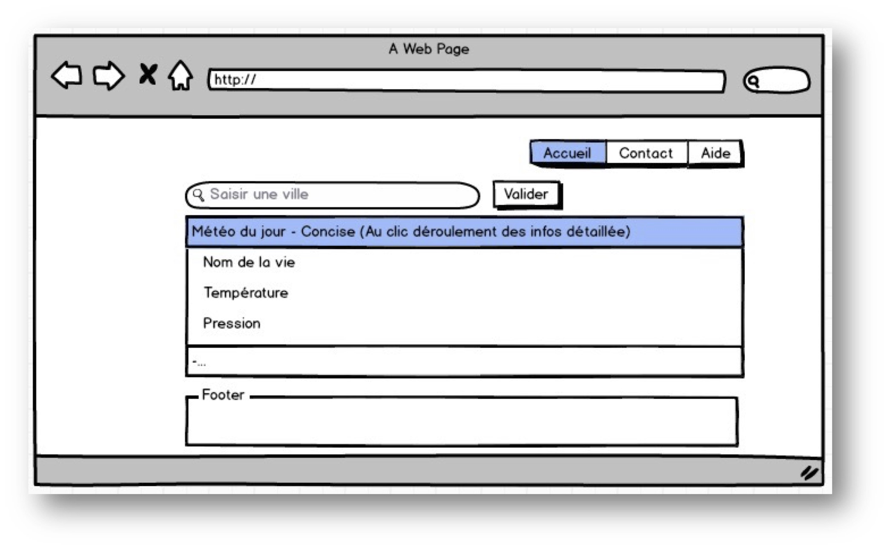

Application méteo
Séance 1 et 2
Objectif du TP
L’objectif des TP de la semaine 1 et 2 en client riche est de se (re)familiariser avec les langages web, HTML5, CSS3 et JavaScript. Mais également de se familiariser avec le concept d’AJAX.
Note
Pour les TP de cette partie de cours, il est conseillé de travailler avec Firefox
et les outils de développement qu’il propose pour déboguer vos scripts et
applications Web. Pour développer cette application Web, vous pouvez
utiliser un éditeur de texte ou un IDE.
Création d’une application web de météo.
Créez un site Web affichant les prévisions météo d’une ville. Le nom de cette ville aura été renseigné par l’utilisateur.
Fonctionnalités attendues
Au minimum votre site web devra donc comporter :
- Un champ de texte pour saisir la ville
- Un bouton pour valider la ville saisit
- Différentes parties (div/table, etc.. ) affichant la prévision.
- Un menu de navigation (accueil, contact, aide)
- Un pied de page
Autres restrictions
- Les navigateurs les plus connus devront pouvoir afficher votre site web.
- Le site devra être « responsive » pour un affichage sur ordinateur, mais aussi sur plateforme mobile.
- Il ne devra y avoir aucun rechargement de page lors de la prise en compte de la ville saisie par l’utilisateur.
- Lors du clic sur les informations concises, des informations plus précises s’affichent.
API
Pour récupérer la météo du jour, nous utiliserons l’API OpenWeatherMap. Cette API prendra ainsi en compte la ville souhaitée et nous retournera sa météo en format JSON.
L’utilisation de cette API nécessite une clé d’authentification. Utilisez la clé
suivante :
ee07e2bf337034f905cde0bdedae3db8
Exemple d'utilisation de l'API
Url :
http://api.openweathermap.org/data/2.5/weather?q=vannes,fr
Retour :
{"coord":{"lon":-2.75,"lat":47.67},"sys":{"message":0.0046,"country":"FR","sunrise":1424588637,"sunset":1424627096},"weather":[{"id":500,"main":"Rain","description":"light rain","icon":"10n"}],"base":"cmc stations","main":{"temp":283.674,"temp_min":283.674,"temp_max":283.674,"pressure":1016.92,"sea_level":1017.73,"grnd_level":1016.92,"humidity":90},"wind":{"speed":9.36,"deg":223.509},"clouds":{"all":92},"rain":{"3h":1},"dt":1424630702,"id":2970777,"name":"Vannes","cod":200}
Exemple de design attendu

Ajout d'icones
Affichez des icônes de météo à la place de l'information textuelle en fonction de la valeur météo retournée par l’API en JavaScript. Vous trouverez une liste d’icônes météo disponibles ici : https://erikflowers.github.io/weather-icons
Rendu
Vous devrez déposer sur Moodle une archive zip contenant votre projet. Cette archive devra contenir :
- Un fichier readme.md expliquant comment installer et utiliser votre application.
- Un dossier contenant votre code source.